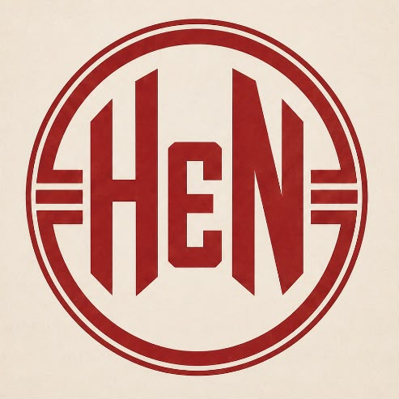

Jugadores
Las leyendas están por salir a la cancha
Muy pronto vas a poder conocer a los jugadores que dejaron su huella en la historia del Globo.
Volver al inicio
HURACÁNEN NÚMEROSJugadores
Muy pronto vas a poder conocer a los jugadores que dejaron su huella en la historia del Globo.
Volver al inicio